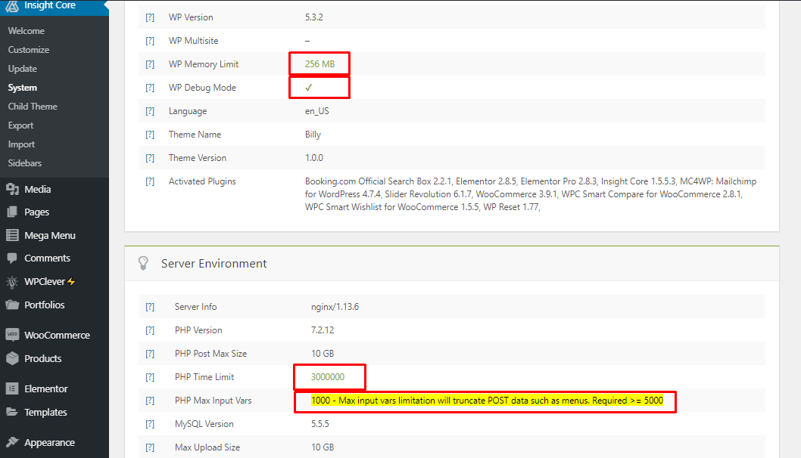
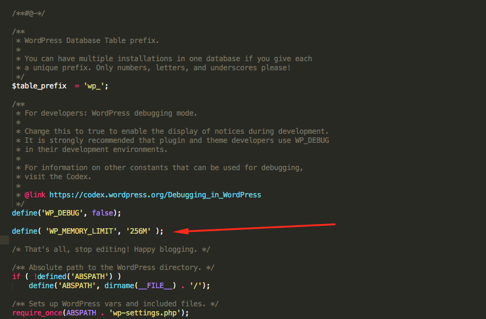
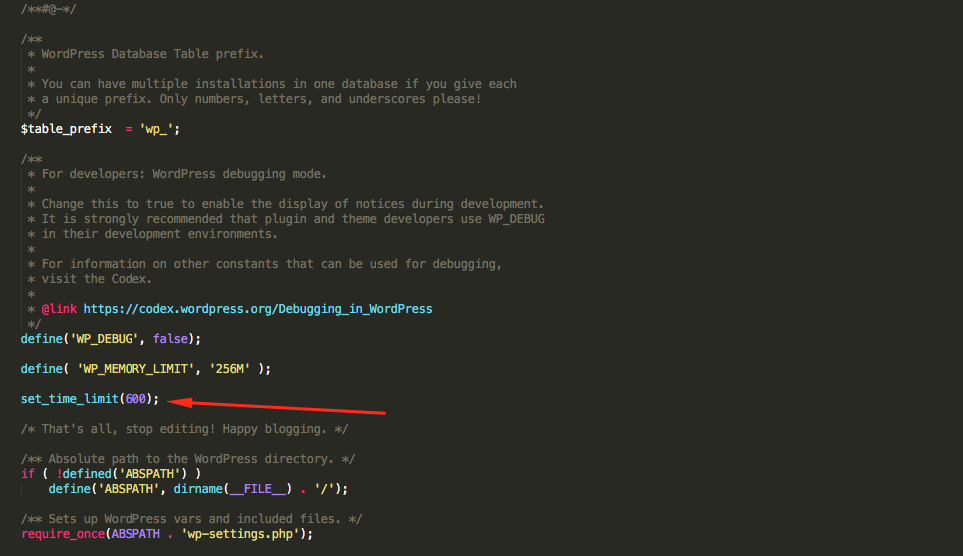
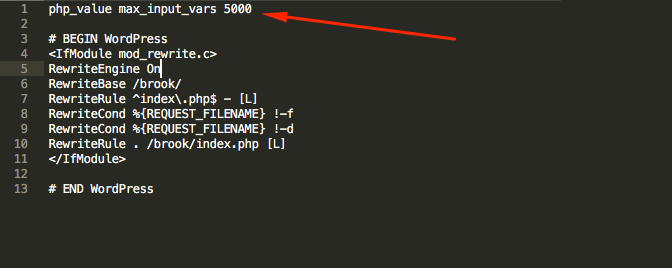
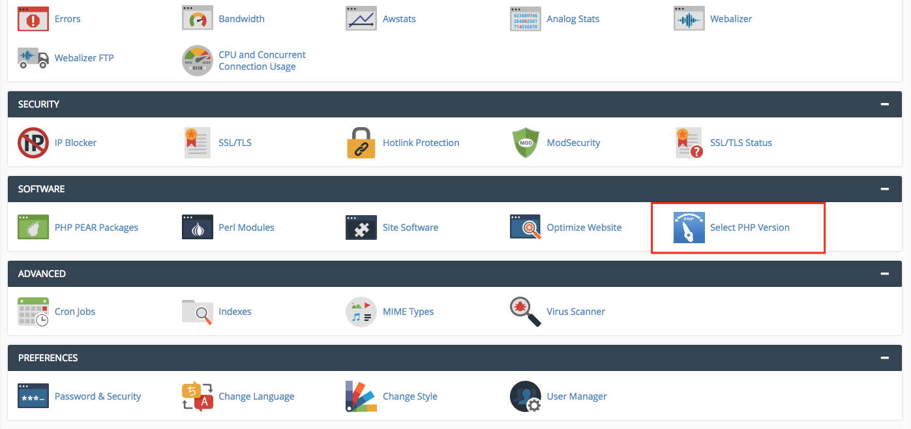
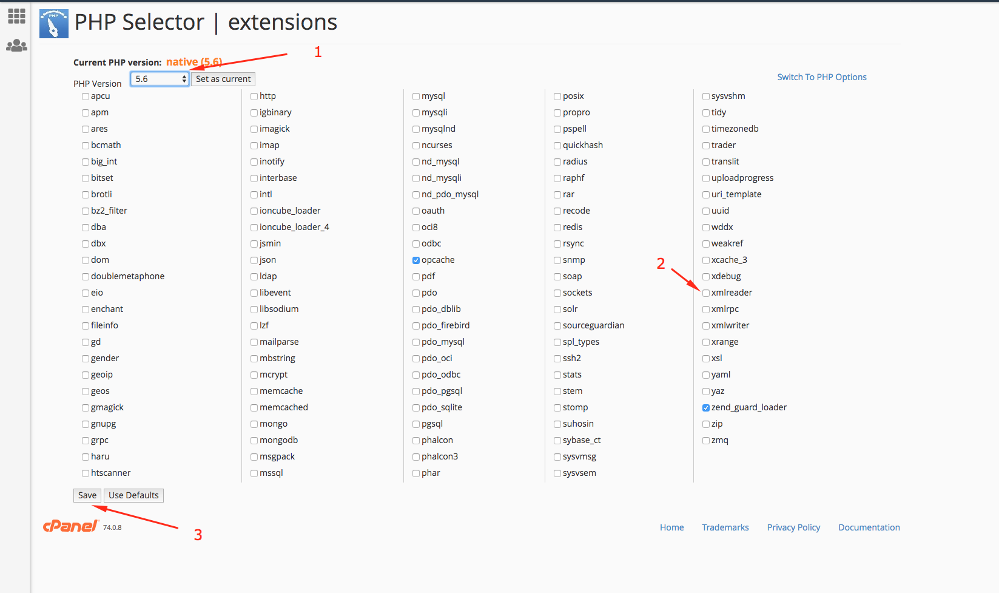

To use UniCamp, you must be running WordPress 4.8 or higher, PHP 5.6 or higher, and MySQL 5 or higher. We have tested it with Mac, Windows and Linux. Below is a list of items you should ensure your host can comply with.
Hosting is more secure when PHP applications, like WordPress, are running using your account’s username instead of the server’s default shared username (www or www-data). The most common way for hosting companies to do this is using PHP. Just ask your potential host if they run PHP or something similar.
Many issues that you may run into such as: white screen, demo content fails when importing, empty page content and other similar issues are all related to low PHP configuration limits. The solution is to increase the PHP limits. You can do this on your own, or contact your web host and ask them to increase those limits to a minimum as follows:
max_execution_time 180memory_limit 128Mpost_max_size 32Mupload_max_filesize 32MYou can verify your PHP configuration limits in the System tab in the Backend-mainpage. Take a look in the left sidebar for UniCamp back end > Insight Core > system.

Your mission is make those 4 sections turn from yellow to green.
Tips For This Part :

WP Debug Mode: It is not importance to set WP Debug Mode then do not worry about it.
PHP Time limit: find the file wp-config.php. Add the line “set_time_limit(600);” above the line /That's all, stop editing! Happy blogging./


Step 1: Come CPanel find select PHP version

Step 2: Choose version 5.6 and enable XML reader extension
Step 3: Save the file
